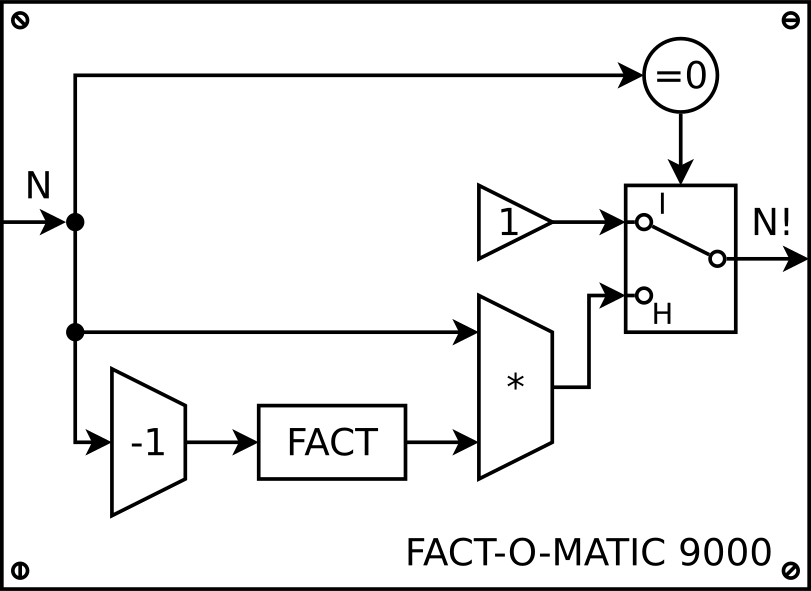

Tömbök algoritmusai. Rekurzió
Czirkos Zoltán, Pohl László, Nagy Gergely · 2015.02.18
Tömbi algoritmusok: keresések és rendezések. Rekurzió.
1Halálfejes hibák I. – új nyelvi elemek
A nagy számonkéréseken halálfejes hibának nevezzük azokat a hibákat, amik leginkább arról tanúskodnak, hogy az elkövetőjük soha gépen, önállóan C programot még nem írt. Eléggé meglehetős pontlevonások járnak értük.

/* true story */
include [stdio.h]
world main {
var $szám, $szorzat;
repeat {
scanf $szám
$szám=$szám · $szorzat
} until (szam<>0)
printf $szorzat;
}
/* fv-ben fv */
int hányprím(int max) {
int prím(int melyik) {
…
…
/* „amíg minden elem -1” */
while (for (i=0; i<10; ++i)
tömb[i]==-1; ) {
/* beolvasás és összegzés */
scanf("%d", &+sum);
2Halálfejes hibák II. – sorminta, tömb, fv
/* tíz szám visszafelé */
int a, b, c, d, …;
scanf("%d", &a);
–||– ("%d", &b);
–||– c);
…
printf("%d", c);
–||– ("%d", b);
–||– ("%d", a);
/* triviális túlindex */ int tomb[10]; for (i=1; i<=1000; ++i) tomb[i]=1; /* indefinit méretű tömb */ char s1[]; gets(s1); char *s2; gets(s2);
Pl. „térjen vissza a függvény IGAZ-zal, ha páros, HAMIS-sal, ha páratlan a paraméterként kapott szám”
/* felesleges, nem kért input/output művelet */
void fv() {
int szám;
scanf("%d", &szám);
if (szám%2==0) printf("páros");
else printf("páratlan");
}
Tömbi algoritmusok: keresések
„Tapasztalt C programozó – nagyjából azt jelenti, hogy tömbkezelésből teljesen profi.” – Marshall Cline
4Keresések általában
Keresés táblázatban – kérdéseink
tárgy
- Szerepel-e egy konkrét elem?
- Hol van az első ilyen elem?
- Egy bizonyos tulajdonságú elem
- Ezt a keresés kulcsának nevezzük
Generikus algoritmusok
- A keresések ugyanúgy működnek:
- Akármilyen típusú az adat (szám, sztring, ember, …)
- Akármilyen tulajdonság (adott értékű elem, páros elem, „a” betűvel kezdődő, 170–180 centi magas)
- A következő példák
double[]-ben keresnek adott elemet
5„Van-e?” – lineáris keresés / eldöntés
int van_e(double *szamok, int meret, double keresett) {
int i, van_talalat;
van_talalat = 0;
i = 0;
while (i < meret && !van_talalat) {
if (szamok[i] == keresett)
van_talalat = 1;
++i;
}
return van_talalat; // miért állt meg a ciklus?
}
- „Van-e?” – elég egy olyat találni, és megállhat a ciklus
- Ha egyet sem találtunk, akkor hamis érték marad a változóban
A van-e függvényt egyéb formákban is lekódolhatjuk. Ezek mind ugyanolyan jól működnek, mint a fenti változat.
for() összetett feltétellel
van_talalat = 0;
for (i = 0; i < meret && !van_talalat; ++i)
if (szamok[i] == keresett)
van_talalat = 1;
return van_talalat;
A C bármilyen kifejezést enged a for() ciklus fejlécében,
így ott egy összetett kifejezés is lehet.
Összetett feltétel v2.0
for (i = 0; i < meret && szamok[i] != keresett; ++i) ; return i<meret;
Ez ugyanaz, mint a fenti, csak a van_talalat változó
lett benne megspórolva. A ciklus két dolog miatt is megállhat;
azért, mert elérjük a tömb végét, vagy azért, mert megtaláltuk
a keresett elemet. A visszatérésnél ellenőrizni kell, hogy melyik
történt a kettő közül. Ezt a tömbindex vizsgálatával lehet
megtenni. (A return szamok[i]==keresett parancs
rossz ötlet, hiszen lehet, hogy a tömb vége miatt állt meg;
olyankor i==meret, vagyis szamok[i]
túlindexelés lenne!)
A keresést megszakítva
for (i = 0; i < meret; ++i)
if (szamok[i] == keresett)
return 1;
return 0;
Mivel a C-ben szabad a függvény belsejében is visszatérni, egy találat esetén azonnal visszatérünk igaz válasszal a „van-e” kérdésre.
for (i = 0; i < meret; ++i)
if (szamok[i] == keresett)
break;
return i<meret;
Így is lehetne. Megszakítjuk a kereső ciklust, ha megtaláltuk az elemet.
Utána kell egy feltétel, ami igazra értékelődik ki, ha megtaláltuk az elemet
– ehhez figyelni kell azt, hogy az i<meret miatt állt meg.
6Lineáris keresés: hol van?
int hol_van(double *szamok, int meret, double mit) {
int i;
for (i = 0; i < meret; ++i)
if (szamok[i] == mit)
return i;
return -1;
}
- A függvény a megtalált elem indexével tér vissza
- Ha nincs meg, akkor
-1-gyel vagymeret-tel - Egyik sem lehet index, így megkülönböztethető
A nincs találatra a -1-et és a tömb méretét is elterjedten használják. Mindkettő a tömb indexeinek tartományán kívül esik (mivel az 0…meret-1), ezért mindkettő egyformán jó lehet. A -1 előnye, hogy szembetűnőbb; a méret előnye, hogy nem negatív szám (mivel a tömb mérete amúgy sem lehet negatív, így elvileg a méreteket, indexeket tárolhatnánk előjel nélküli változókban is).
A találatra mutató pointerrel visszatérő változat:
double *keres(double *szamok, int meret, double mit) {
int i;
for (i = 0; i<meret; ++i)
if (szamok[i] == mit)
return szamok+i; // &szamok[i]
return NULL;
}
A függvény a megtalált elem pointerével tér vissza,
ha nincs, akkor NULL pointerrel. Ehhez hasonlóan viselkednek a
könyvtári strchr(), strstr() stb. függvények.
Pointer aritmetikát használó változat:
double *keres(double *szamok, int meret, double mit) {
double *iter;
iter = szamok;
while (iter != szamok+meret) { // utolsó utáni
if (*iter == mit)
return iter;
++iter; // pointer lép a következőre
}
return NULL;
}
Ebben a pointert a tömb elejére állítjuk: iter=szamok.
Utána addig megyünk, amíg nem az utolsó utáni: iter!=szamok+meret.
Itt *iter a pointer által mutatott, a vizsgált érték,
a ++iter kifejezés pedig a következő elemre lépteti a pointert.
7A strázsa technika (sentinel)
találmánya
tomb[elemek] = keresett; // szándékos!
for (i = 0; tomb[i] != keresett; ++i) {
/* üres */
}
if (i != elemek)
return i; /* meglett! */
else
return -1; /* a strázsát találtuk meg */
int tomb[10+1] = {2, 5, 7, 3, 8, 6, 9, 4, 8, 7}; // +1!
hely = strazsakeres(tomb, 10);
| 2 | 5 | 7 | 3 | 8 | 6 | 9 | 4 | 8 | 7 | ? |
Lényege: betesszük a tömb végére a keresett elemet.
A strázsás keresés egy kicsit gyorsabb, mert tömbelemenként csak egy vizsgálatot kell végezni – arra nem kell figyelni, hogy elértük-e a ciklussal a tömb végét. Mivel a végére betettük a keresett elemet, ezért a ciklus feltétele előbb-utóbb hamis lesz, legkésőbb a strázsánál.
Ez a módszer csak akkor használható, ha tudjuk, hogy van még hely a tömbben (legalább eggyel nagyobb), és szabad módosítani a tömböt.
8Bináris keresés – legyünk okosabbak!
Ha rendezett a tömb…
Nem csak == és != van, hanem a < és a > is hasznos információ!
==: Ezt keressük!<: Valahol előrébb kell legyen.>: Hátrébb kell legyen.
int binkeres(double *t, int db, double mit) {
int min = 0, max = db-1, // határok
kozep = (min+max)/2;
/* amíg nincs meg és el nem fogy a vizsgálandó rész */
while (min <= max && t[kozep] != mit) {
if (t[kozep] < mit)
min = kozep+1; // középtől jobbra
else
max = kozep-1; // középtől balra
kozep = (min+max)/2;
}
/* miért állt meg a ciklus? megtaláltuk vagy nem? */
return min <= max ? kozep : -1;
}
A bináris keresés minden lépésben megfelezi a vizsgálandó
tömbtartományt. A működésének lényege: megvizsgálja a középső tömbelemet.
Ha az rögtön az, amit keresett, akkor vissza is tér vele. Ha nem, akkor
a kisebb-nagyobb relációtól függően tudja folytatni a vizsgálatot. Ha
a keresett elem kisebb, mint a rendezett tömb középső eleme, akkor valahol
tőle balra kell keresni az elemet; ha nagyobb, akkor pedig valahol tőle
jobbra. Ezért a min és a max max változók (amely
az épp vizsgált tartomány alsó és felső határát mutatják) ettől
függően beállíthatók a középsőtől balra vagy jobbra lévő elemre.
Mindezt
addig kell folytatni, amíg meg nem találjuk a keresett elemet, vagy a vizsgálandó
tartomány nulla méretűvé nem zsugorodik. (Mivel a min-t és a
max-ot mindig a középsőtől eggyel arrébb állítjuk, a tartomány
eltűnését a min>max miatt vehetjük észre.) A ciklusnak itt
is összetett feltétele van, a befejeződése után ezért meg kell vizsgálni, miért
állt meg.
9A keresések időigénye
| hatékonyság | örülünk-e |
|---|---|
| O(1), konstans | 
|
| O(log n), logaritmikus | |
| O(n), lineáris | |
| O(n2), négyzetes | 
|
| O(en), exponenciális | 
|
Lineáris keresés: O(n)
- Lehet, hogy egyből megtaláljuk, lehet, hogy a végén lesz
- Átlagosan a felét kell végignézni
- A keresési idő egyenesen arányos a tömb méretével
Bináris keresés: O(log2n)
- Minden lépésben felezzük az intervallumot
- A keresési idő ~ log2méret. 1 millió → 20 lépés ☺
Algoritmusok hatékonysága általában
tárgyból lesz
Az O(n) jelöléssel szoktuk leírni azt, hogy egy algoritmus mennyi idő alatt végzi el a feladatát – egészen pontosan azt, hogy az elvégzéshez szükséges idő hogyan függ a bemeneti adatok számától. Ebben a jelölésben általában a konstans szorzókat el szoktuk hanyagolni; O(2n) helyett egyszerűen O(n)-t írunk, hiszen a függés jellegén azok nem változtatnak.
A konstans szorzók amiatt sem számítanak, mert csak az egyes függvénytípusok „erőssége” döntő nagy n-ek esetén. Az n2 „bikább”, mint az n, mivel még 10000n esetén is lehet olyan n-et találni, amelyre n2>10000n. Ilyen értelemben az en a „legbikább” függvény, hiszen megfelelően nagy n esetén az nagyobb bármilyen hatványfüggvénynél (pl. n1000). Ez azt jelenti, hogy az tart leggyorsabban a végtelenhez, míg a logaritmus függvény értéke pedig mindegyik közül a leglassabban.
Emiatt részesítjük előnyben az olyan algoritmusokat, amelyek O(1), O(log n) vagy O(n) időben futnak. Az O(n2) nagy n-ek esetén már lassúnak lehet; O(en) pedig valószínűleg lassú már kis n-ek esetén is. Éppen erre épülnek a titkosítások: ha jó az algoritmus, akkor a megfejtés csak próbálkozásra épülhet – ami viszont viszonylag kis kulcs esetén is beláthatatlanul hosszú ideig tart. (Titkosítás: ha a jelszó (titkosítás kulcsa) 128 bites, a végigpróbálandó lehetőségek száma: 2128=340282366920938463463374607431768211456 darab.)
11Rendezések, helyben rendezés
Rendezett tömb
- Növekvő sorrend: a szomszédos elemekre
t[i] <= t[i+1] - Tranzitív tulajdonság: ha A≤B és B≤C, akkor A≤C
A „helyben rendezés” fogalma
- Nincs segédtömb, a meglévő tömbben dolgozunk
- Megengedett lépések: két elem összehasonlítása és cseréje
A rendezések működése
- Genericitás: az algoritmusok általánosak (sorrend, típus)
- „Oszd meg és uralkodj” elv: divide and conquer (latinul: divide et impera)
- A rendezett részt növeljük, amíg el nem fogy
12Buborékrendezés (bubble sort)
Lényege: egymás melletti elemek összehasonlítása és cseréje.
Egy sor csere által a legnagyobb elem a végére kerül.
A buborékrendezés egymás melletti elemeket hasonlít össze. Lépései:
- Hasonlítsuk össze az első két elemet. Ha nincsenek jó sorrendben, cseréljük meg.
- Hasonlítsuk össze a második párt (második és harmadik elem). Esetleg csere.
- Folytassuk így a tömb végéig.
- A legnagyobb elem ezáltal a tömb végére kerül, még akkor is, ha legelöl volt. Az már a végleges helye.
- Csináljuk meg ugyanezt még egyszer, a tömb elejétől az utolsó előttiig. Az utolsóhoz már nem kell nyúlni, hiszen az a legnagyobb.
- Aztán ugyanezt megint, de az utolsó kettőhöz már nem nyúlunk stb.
Futás közben így a tömb két részre oszlik: egy már rendezett és egy még rendezetlen részletre. A rendezetlen részlet egyre csökken; azon belül kell összehasonlítani és esetleg cserélni a párokat. Ezért az algoritmus két ciklust tartalmaz. A külső ciklus az egyre kisebb rendezetlen részt határozza meg; a belsejében lévő pedig az egymás melletti párok összehasonlítását vezérli.
void buborek(double t[], int db) {
int i, j;
/* egyre rövidebb tömbrészletek ciklusa */
for (i = db-1; i > 0; --i)
/* egymás utáni párok ciklusa */
for (j = 0; j < i; ++j)
if (t[j+1] < t[j]) { // összehasonlítás
double temp = t[j];
t[j] = t[j+1]; // csere
t[j+1] = temp;
}
}
Javított buborékrendezés (improved bubble sort)
Figyeli, hogy egy fésülés során volt-e csere. Ha nem, leállítható a rendezés.
Keverő rendezés (cocktail sort)
A sima buborékrendezésnél: nyulak és teknősök.
- nyulak (rabbits)
- nagy értékű elemek, amelyek a hamar a helyükre kerülnek
- teknősök (turtles)
- kicsi értékűek, amelyek lassan vándorolnak a tömb elejére
Ötlet: a rendezést felváltva egyik-másik irányba végezzük.
13Közvetlen kiválasztással (selection sort)
Lényege: megkeresi a rendezetlen tömbrészlet legkisebb elemét, és az elejére rakja.
Ezt az algoritmust szélsőértékkeresős, vagy minimumkeresős rendezésnek is szokták nevezni. A működéséhez a buborék algoritmusnál tett megfigyelés adja az ötletet: ott a belső ciklus minden futása után a legnagyobb elem a rendezetlen részlet végére, és ezáltal a rendezett részlet elejére került. Az ötlet lényege, hogy ne cserékkel toljuk el odáig a legnagyobb elemet, hanem inkább keressük meg a tömbben azt, és végezzük el egy lépésben a cserét. Vagyis tegyük egyből a helyére a kérdéses elemet. Itt a legkisebb elemekkel történik ez.
A közvetlen kiválasztásos algoritmus előnye a buborékrendezéshez képest, hogy jóval kevesebb cserét végez a tömbben. Itt mindegyik tömbelem egy lépésben a helyére kerül, vagyis legrosszabb esetben is a cserék száma db-1, ahol db a tömb mérete.
void kozvetlen(double t[], int db) {
int i, j, minindex;
for (i = 0; i < db-1; ++i) {
minindex = i; // minimum keresése
for (j = i+1; j < db; ++j)
if (t[j] < t[minindex])
minindex = j;
if (minindex != i) { // csere?
double temp = t[minindex];
t[minindex] = t[i]; // csere.
t[i] = temp;
}
}
}
A fenti megvalósítás nem a legnagyobbat, hanem
a legkisebb elemet keresi meg a tömbből, és azt rakja az elejére,
ahogyan az előbbi dián látható animáció is.
A kód szerkezete hasonló az előzőéhez, itt is ciklusban ciklus kell.
A külső ciklus i változója éppen azt az indexet tárolja
mindig, amelyik helyre az odavaló elemet keressük. Első futásnál ez
0, vagyis az egész tömb (t[0]…t[db-1]) legkisebb elemét
keresi meg a j-s, belső ciklus. A keresés után a legkisebbnek
talált elem ide kerül, és később már nem is mozdul el innen.
14Rendezések hatékonysága – cserék száma
Melyik algoritmus gyorsabb, a buborékrendezés vagy a szélsőértékkereséses rendezés?
A fenti animáció kicsit csal. Nem túl igazságos, ugyanis az összehasonlítások idejére nem figyel, hanem csak a helycseréket animálja. Ugyanakkor a lényeg látszik: a buborékrendezés nagyon sok ideig bíbelődik a cserékkel, míg a közvetlen kiválasztásos módszer hamarabb végez a tömbbel.
Ez azonban csak az általános eset. Lehetnek olyan speciális esetek, amelyeknél a buborékrendezés jobban teljesít: Pl. ha csak egy-két elem van rossz helyen, azokat a buborékrendezés sokkal gyorsabban a helyükre tudja rakni, mintha egy szélsőértékkereséses algoritmust használnánk.
Ezért a rendezőalgoritmusok összehasonlításakor mindig meg szokták adni a minimális, átlagos és maximális lépésszámot.
| rendezés | összehasonlítás | cserék | ||||
|---|---|---|---|---|---|---|
| max | átlag | min | max | átlag | min | |
| javított buborék | n2 | n2 | n | n2 | n2 | 0 |
| közvetlen kiválasztás | n2 | n2 | n2 | n | n | 0 |
| gyorsrendezés | n2 | n·logn | n·logn | n2 | n·logn | 0 |
| kupacrendezés | n·logn | n·logn | n·logn | n·logn | n·logn | n·logn |
15Az indexelő tömbök és használatuk
Tömbök rendezésekor két problémába ütközhetünk. Az egyik, ha nagyon nagyok a tömbelemek (pl. nagy struktúrák), akkor a rendezés nagyon lassú lehet. A másik, hogy esetleg egyszerre többféle rendezettségre is szükségünk lehet (pl. egy névsornál név szerinti ábécé sorrendre, és kor szerinti, azaz születési évszám szerinti sorrendre.)
Ötlet: egy indexelő tömböt rendezzünk, ne az eredetit!
Az indexelő tömb lényege, hogy a tényleges, adatokat tároló
tömböt nem közvetlenül indexeljük, hanem veszünk mellé egy int-eket
tároló tömböt is, és annak „szemüvegén” keresztül nézzük az eredeti tömböt. Így az
indexelő tömbbe tett számok sorrendje határozza meg azt, hogy az adatelemeinket
milyen sorrendben látjuk.
Ember nevsor[100];
int index[100]; // ugyanakkora
printf("%s", nevsor[index[3]].nev);
/* nevsor[nev_index[i]] → név szerinti sorrend */
/* nevsor[szuletesi_datum_index[i]] → dátum szerinti sorrend */
Ha nem az eredeti tömböt rendezzük, hanem az indexelő tömböt, akkor sokkal gyorsabbak a cserék, és ezáltal a rendezések is. Az indexelő tömb ötlete megoldja a többféle rendezettség problémáját is: elég csak két indexelő tömböt használni. Sőt, az adatokat sem kell duplán tárolni!
16Kertitörpe-rendezés (gnome sort)
Lényege: ha az egymás mellettiek jó sorrendben vannak, léphetünk egyet előre. Ha rossz sorrendben, akkor csere. Ha a csere által rossz sorrend keletkezik, az csak a csere előtt lehet, ezért visszafelé kell lépni egyet.
void torperendez(double t[], int db) {
int i = 0;
while (i < db) {
if (i == 0 || t[i-1] <= t[i]) { // jó sorrend?
i++; /* előre */
} else {
double tmp = t[i]; /* csere */
t[i] = t[i-1];
t[i-1] = tmp;
i--; /* vissza */
}
}
}
Rekurzió
Az elv, hogy meg lehet hívni egy függvényből egy másikat, rögtön felveti a kérdést: vajon saját magát is?
Pl. mi lenne, ha egy faktoriálist számító masina így nézne ki belülről:

┌
│ 1, ha n=0
n! = ┤
│ n·(n-1)!, ha n>0
└
Ez helyes, hiszen ha N=0, a faktoriálisa 1, ha nem 0, akkor pedig N faktoriálisa N szorozva N-1 faktoriálisával.
Ha beteszünk a nagy faktoriális gépbe egy miniatűr faktoriális gépet (működjön az bárhogy is), egy jó megoldást kapunk.
18Függvényhívás megint: a verem (stack)
A verem nevű memóriaterületre kerülnek függvényhíváskor a paraméterek és a visszatérés adatai. Ide kerülnek a lokális változók is.
Ezt a memóriaterületet azért nevezik veremnek, mivel ugyanúgy telik meg, mint egy verem (gödör). Amit legutoljára betettünk, azt látjuk legfelül, és kivenni is azt tudjuk legelőször.
Érdekesség: a vermet is Alan Turing találta ki. Amikor egy értéket az általa tervezett gép betett a verembe, azt a műveletet BURY-nek, azaz eltemetésnek nevezte. A kivétel pedig az UNBURY, vagyis a kiásás.
A paramétereket a hívó programrész helyezi el a verembe. A visszatérési értéknek a helyét is a hívó foglalja le. Ezért a függvényhívás után ennek a dolga ezeket a területeket felszabadítani is. A hívott függvény foglal helyet a saját lokális változói számára, és így ennek a dolga az is, hogy felszabadítsa azt. Mindezzel nekünk semmi dolgunk nincsen, a fordító hozza létre ezeket a programrészeket a háttérben. Ezért ezeket automatikus kezelésű változóknak is szokták nevezni.
Minden függvényhíváskor létrejön tehát egy rész a veremben, amely az adott híváshoz tartozik, és visszatéréskor megszűnik. Ennek neve: keret (stack frame). Ha a függvényből egy másik függvényt is meghívunk, akkor egy ahhoz tartozó keret is létrejön a veremben – mindig legfelül, természetesen.
Alább egy függvényhívás látható, a hozzá kialakuló veremszerkezettel.
int fakti(int mie) {
int szorzat, i;
szorzat = 1;
for (i = 2; i <= mie; ++i)
szorzat *= i;
return szorzat;
}
int main(void) {
int x = fakti(5);
printf("%d", x);
return 0;
}
A függvényhívás előtt a következő történik:
- A hívó
main()beteszi a verembe a paramétereket. - Helyet csinál a visszatérési értéknek is.
- Meghívja a függvényt, ami által bekerül a verembe a visszatérés címe (vagyis hogy hol kell folytatni a programot a függvényből visszatérvén).
A fakti() függvényben a működés:
- Létrehozza magának a lokális változókat a veremben.
- A paramétereit a veremben találja.
- A visszatérési értéket a verembe teszi, a megfelelő memóriaterület felülírásával.
- Amikor visszatér, akkor a hívóhoz ugrik vissza – a cím a veremben.
A függvényhívás után a hívó:
- A veremben megtalálja a visszatérési értéket. Ezt felhasználja, ha szeretné.
- Kitörli a veremből az általa betett függvényparamétereket, hiszen azokra már nincsen szükség.
20Faktoriális: a függvényhívás menete
int fakt(int n) { if (n <= 1) return 1; else return n* fakt(n-1); } int main() { int eredm; eredm = fakt(3); printf("3!=%d", eredm); return 0; }
fakt(1) n: 1 (vissza):
fakt(2) n: 2 (vissza):
fakt(3) n: 3 (vissza):
main() eredm:
A lokális változók csak addig léteznek, amíg a faktoriálist számoló
függvény belsejében van a végrehajtás. Amint visszatér abból a
main()-be, azok megszűnnek.
Gondoljunk bele: most használjuk ki igazán, hogy a függvény után a gép onnan
folytatja a végrehajtást, ahonnan meg lett hívva! Ha ez sok függvényhívással odébb
volt, akkor is. Ha sok rekurzív függvényhívással beljebb (lejjebb) volt, akkor is!
Ezért mindig tudja a gép, hogy épp a fakt(n-1) kiszámítása ért
véget, és visszaugrik abba a példányba, ahol a fakt(n) kiszámítása
folyik.
21A leállási feltétel
Ahogy a ciklusoknak is van egy feltételük, amely nem teljesülése esetén megállnak az iterációk, a rekurziónál is előbb-utóbb el kell jutnunk egy olyan pontra, amikor a függvény már nem hívja meg magát. Különben sose térne vissza. A rekurziónál ezt báziskritériumnak nevezzük.
Leállási feltétel
- Kell legyen egy báziskritérium: amikor már nem hívja meg magát.
- Minden lépésben közeledni kell a báziskritériumhoz.
Klasszikus példa a rekurzióra az ún. Fibonacci számsor. Ebben a számsorban minden elem az őt megelőző két elem összege.
┌
│ n, ha n<2
F(n) ┤
│ F(n-2)+F(n-1) amúgy
└
int fib(int n)
{
if (n < 2) // báziskritérium
return n;
else
return fib(n-2) + fib(n-1);
}
A fenti függvényben teljesül a leállási feltétel: n<2
esetén a függvény nem hívja meg már magát, és a hívások során mindig kisebb n
szám a paraméter. A számsor kiszámítására amúgy ez nem túl hatékony megoldás, inkább
csak az egyszerűsége miatt szép a függvény. Vegyük észre a rajzon: pl. a fib(2)
értékét többször is kiszámoljuk. (Sőt a függvényhívások száma exponenciálisan növekszik.)
lesz róla szó
22Hanoi tornyai játék
Másik klasszikus példa a rekurzióra az ún. Hanoi tornyai játék. Ebben a korongokat át kell tenni az első rúdról a harmadikra, de úgy, hogy 1) egyszerre csak egy korongat mozgathatunk, 2) kicsi korongra nagyot nem tehetünk. (A középső oszlop ideiglenes tárolónak használható.) Négy korong esetén ez a lépéssorozat adja a megoldást: A→B, A→C, B→C, A→B, C→A, C→B, A→B, A→C, B→C, B→A, C→A, B→C, A→B, A→C, B→C. A látszólag bonyolult probléma rekurzív megoldása pár soros.
Ötlet. Rakjunk félre n-1 korongot… Akkor az alsó korong mozgatható!
Na de arról volt szó, hogy egyszerre csak egy korong mozoghat…
Próbáld ki! A „következő” és „folyamatos” gombokat nyomva egyesével látszanak a lépések. A „start” után a „varázslat” gomb pedig megmutatja azt, min alapszik a megoldás ötlete.
23Hanoi tornyai – a megoldás vázlata
Top-down tervezés
a top-down
tervezésben?
if (prim(i))
...;
Függvény = fekete doboz. Nem kell belelátnunk!
Hanoi tornyai: megoldásvázlat top-down tervezéssel
/* VÁZLAT */
void hanoi_vazlat(int n, char honnan, char seged, char hova) {
varazslat(n-1, honnan, hova, seged);
printf("rakj 1-et: %c->%c\n", honnan, hova);
varazslat(n-1, seged, honnan, hova);
}
Ha szeretnénk honnan, hova pakolni a korongokat a
seged oszlop használatával, a lépések:
- Varázsoljunk n-1 korongot a kiindulási (honnan) oszlopról a segédoszlopra. Eközben a cél, „hova” oszlop lehet az ideiglenes tároló.
- Ha ezt megoldottuk, akkor a legalsó korongot csak át kell rakni.
- És az átrakott legalsó, legnagyobb korongra a félretett
n-1korongot varázsoljuk. Vagyis a segédoszlopról (mert oda tettük őket félre) a céloszlopra (végleges helyükre), közben a kiindulási oszlop (honnan) lehet az ideiglenes tároló.
Tehát n-1 korongot varázsolunk, 1-et mozgatunk,
végül megint n-1-et varázsolunk. Mit jelent a varázslat? Hogy
n-1 korongot helyezünk át; ott viszont ugyanazt kell majd csinálni,
mint amit itt kellett. Innen jön a rekurzió.
A megértés kulcsa az, ha nem (!) próbáljuk meg megérteni, a
varazsol(n-1) belsejében mi történik. A top-down tervezést mindig úgy
végeztük el, hogy feltételeztük bizonyos függvények létezését, amelyek
részfeladatokat végeznek el. Ezekről a függvényekről azt feltételeztük, hogy
helyes bemenetre helyes eredményt adnak. A rekurzió tervezésekor ezt gondoljuk
az éppen írt függvényünkről is.
A rekurzió tervezésénél a következő két dolgot kell tehát végiggondolni:
- Melyik az a legegyszerűbb eset, amelynél a megoldás egyértelmű? Jelen esetben ez az lesz, amikor 0 korongot kell mozgatni, mert olyankor már nincs is dolgunk.
- Ha bonyolultabb esetről van szó, hogyan lehet visszavezetni egyszerűbb esetekre? Jelen esetben: n-1 korong mozgatása, egy korong mozgatása, n-1 korong mozgatása.
24Hanoi tornyai – megoldás C-ben
A fentiek alapján a teljes megoldás:
#include <stdio.h>
void hanoi(int n, char honnan, char seged, char hova) {
if (n == 0)
return;
hanoi(n-1, honnan, hova, seged);
printf("rakj 1-et: %c->%c\n", honnan, hova);
hanoi(n-1, seged, honnan, hova);
}
int main(void) {
hanoi(4, 'A', 'B', 'C');
return 0;
}
25Iterációval vagy rekurzióval?
Bizonyítható: minden rekurzív probléma megoldható iteratívan is, és minden iteráció átalakítható rekurzióvá.
int fib(int n) {
int eloz = 1, f = 0, kov, i;
for (i = 0; i < n; ++i) {
kov = f+eloz;
eloz = f; f = kov;
}
return f;
}
iteratív
int fib(int n) {
if (n < 2)
return n;
else
return fib(n-2)
+fib(n-1);
}
rekurzív
void kiir(char *sztring) {
while (*sztring != '\0') {
putchar(*sztring);
sztring += 1;
}
}
void kiir(char *sztring) {
if (*sztring == '\0')
return;
putchar(*sztring);
kiir(sztring+1);
}
Némely rekurzív függvények egészen egyszerűen átírhatók
ciklusra. Ugyanis ha a rekurzív hívás után már nem csinál semmit a függvény,
hanem egyből visszatér, az végeredményben csak egy ciklus. Az kiir()
pont ilyen, ún. jobbrekurzív függvény. Itt az átalakítás a másik irányban
látható; iteratív függvényből rekurzív lett.
Mikor használjuk a rekurziót?
- Sokszor egyszerű és szemléletes a rekurzív megoldás, pl.
fib(n)- Egyszerűbb a helyességét is bizonyítani… pl.
fib(n) - De nem biztos, hogy a leghatékonyabb… pl.
fib(n)
- Egyszerűbb a helyességét is bizonyítani… pl.
- Nem érdemes indokolatlanul használni ciklusok helyett
- Leginkább rekurzív jellegű problémák esetén
- Pl. 5+2*3 kifejezés értelmezése
- Rekurzív adatszerkezetek esetén (erről később lesz szó)
26A rekurzív hívás helye a függvényben
void elore(char *sztring) {
if (*sztring == '\0')
return;
putchar(*sztring);
elore(sztring+1);
}
előre("InfoC") // InfoC
putchar('I')
előre("nfoC")
putchar('n')
előre("foC")
putchar('f')
előre("oC")
putchar('o')
előre("C")
putchar('C')
előre("")
/* semmi */
void hatra(char *sztring) {
if (*sztring == '\0')
return;
hatra(sztring+1);
putchar(*sztring);
}
hátra("InfoC") // CofnI
hátra("nfoC")
hátra("foC")
hátra("oC")
hátra("C")
hátra("")
/* semmi */
putchar('C')
putchar('o')
putchar('f')
putchar('n')
putchar('I')
Természetesen az előre függvény a sztringet előrefelé, a hátra pedig a sztringet hátrafelé, vagyis megfordítva írja ki. Ez mindössze két utasítás felcserélésén múlik. Az előre függvény ugyanis kiírja az első karaktert, utána pedig a sztring többi részét. A hátra függvény ezzel szemben kiírja a sztring többi részét, utána pedig az első karaktert – de mivel a „többi részét” is ugyanilyen módon jeleníti meg, ezért az a „többi rész” is fordítva lesz.
A rekurzív hívás során az átadott sztring viszont mindkét esetben ugyanaz lépésenként, hiszen az eredeti sztring nem fordul meg! Ez látható a lenti táblázatban, amely azt mutatja be, hogy mi történik a rekurzív hívás előtt és után az egyes esetekben.
| előre | hátra | |
|---|---|---|
| hívás előtt | putchar('I') | - |
| rekurzív hívás | elore("nfoC") | hatra("nfoC")
|
| hívás után | - | putchar('I')
|
Érdemes ezt kipróbálni nyomkövetőben!
Tömböket (és később: listákat) C-ben ciklusokkal dolgozunk fel, hiszen az a természetesen adódó eszköz erre a feladatra. Az itt bemutatott rekurzív sztringfeldolgozás célja kizárólag az, hogy a rekurzió működésére rávilágítson, és mindehhez egyszerű példát adjon. A sztring előre- és hátrafelé történő kiírása olyan egyszerű, magától értetődő iteratív feladat, amelyet C-ben rekurzív módon megvalósítani pazarlás (a sok függvényhívás mind időbe telik).
27Gyorsrendezés (egy rekurzív módszer)
Tony Hoare
Lényege: egy elemet vezérelemnek választva két részre osztjuk a tömböt:
annál kisebbekre és nagyobbakra.
Ezután az így keletkező két részt rendezzük.
A gyorsrendezés az „oszd meg és uralkodj” elven működik. Lépései a következők:
- Kiválasztunk a tömbből egy tetszőleges elemeket. Ez lesz az ún. vezérelem (pivot).
- Az ennél kisebbeket a tömb elejére, az ennél nagyobbakat a tömb végére rendezzük. (Ez a sima szétválogatási feladat. A vezérelemmel megegyező elemek mehetnek bármelyik oldalra.)
- Ezután az így keletkező két tömbrészletet külön rendezzük, az algoritmus rekurzív hívásával.
Érdemes megfigyelni a következőt: ha a vezérelem elé rendeztük a kisebbeket, mögé a nagyobbakat, az azt jelenti, hogy a vezérelem már a végleges helyére kerül. Ugyanis ha nála kisebből van emennyi (előtte), nála nagyobból meg amannyi (utána), akkor ezek a számok egyben a vezérelem helyét is meghatározzák. Hiszen ezek (emennyi és amannyi) nem fognak már változni.
Az algoritmus hatékonysága azon múlik, hogy sikerül-e jó vezérelemet választani. Akkor lehet minden lépésben a kisebbekre és nagyobbakra szedett tömbrészeket egyenlő nagyságúvá tenni (vagyis felezni a tömböt), ha a vezérelem éppen a tömb mediánja, azaz a rendezett tömb középső eleme. Sajnos a mediánt nem tudjuk megmondani, hiszen ahhoz rendezve kellene legyen a tömb… Ezért leginkább azt szokták csinálni, hogy találomra választanak egyet, akár éppen az elsőt vezérelemnek, és kész. Ez persze nem optimális. Pár „start” gomb klikkelés után ez látszik is, ha kijön egy olyan tömb, ahol 1 vagy 9 az első elem. Ilyenkor az első körben szinte semmi nem történik. Emiatt van az, hogy bár átlagos esetben ez az algoritmus O(log n) időben tud teljesíteni, de legrosszabb esetben ugyanúgy O(n2) időben fut le, mint az előbbiek. Olyankor ugyanis pont a buborékrendezést kapjuk vissza.
Érdekesség: jól optimalizálható az algoritmus, ha számokat kell rendezni. Mivel minden összehasonlítás a vezérelemet vizsgálja, azt körönként csak egyszer kell kiolvasni a memóriából. (Ez persze a C kódban nem látszik, csak a fordító által optimalizáltban.) C. A. R. Hoare angol programozó, matematikus. Legismertebb eredménye a gyorsrendezés algoritmusa, amelyet 26 évesen dolgozott ki.
28Szétválogatás – kékek előre, pirosak hátra
Lényege: a tömb két végéről indulnak indexek.
Megkeressük balról az első
pirosat, jobbról kéket, és megcseréljük őket.
Ezt folytatjuk, amíg a két index
nem találkozik.
Az algoritmus működésének a lényege:
- Indítunk két indexet, egyiket a tömb elejéről (bal), másikat a végéről (jobb).
- Balt addig növeljük, amíg kék golyóra mutat. Így találunk egy piros golyót.
- Jobbat addig csökkentjük, amíg piros golyóra mutat. Így
- Megcseréljük a talált pirosat a kékkel, és így folytatjuk, amíg a két index „össze nem ér”.
Minden csere után természetesen növelhetjük a balt és csökkenthetjük a jobbat eggyel, hiszen a csere hatására a bal index alá kék, a jobb index alá pedig piros golyó kerül. Fontos, hogy a keresések során is figyeljük, hogy nem értek-e össze az indexek; ez előfordulhat ugyanis bármelyik pillanatban. (Ezzel azt is ellenőrizzük, hogy nem érünk-e a tömb végére valamelyik indexszel. Az is lehetséges, ha a tömb csak kék vagy csak piros golyót tartalmaz.)
enum golyo { kek, piros };
void szetvalogat(enum golyo *tomb, int meret) {
int bal = 0, jobb = meret-1;
while (bal < jobb) {
while (bal < jobb && tomb[bal] != piros) // pirosat keres
++bal;
while (bal < jobb && tomb[jobb] != kek) // kéket keres
--jobb;
if (bal < jobb) {
enum golyo temp = tomb[bal]; // csere
tomb[bal] = tomb[jobb];
tomb[jobb] = temp;
++bal;
--jobb; // egyből a következőkre
}
}
}
Vagyis pl. a kereső ciklusok megállhatnak így:
Ha megcseréljük a tomb[bal] és a tomb[jobb] elemet:
Akkor a csere után a két indexet gondolkodás nélkül növelhetjük és csökkenthetjük:
És innen folytatjuk megint piros-kék kereséssel.
29gyorsrendez.c
void gyorsrendez(double tomb[], int min, int max) {
double vezer = tomb[(min+max)/2]; // vezérelem: középső
int i = min, j = max;
while (i <= j) { // piros/kék válogatás
while (tomb[i] < vezer) ++i;
while (tomb[j] > vezer) --j;
if (i <= j) {
double tmp = tomb[i];
tomb[i] = tomb[j];
tomb[j] = tmp;
++i;
--j;
}
}
if (min < j) gyorsrendez(tomb, min, j); // rekurzió
if (i < max) gyorsrendez(tomb, i, max);
}
Az algoritmus részei: a while (i <= j) ciklus végzi a szétválogatást;
utána pedig az utolsó két sorban láthatók a rekurzív hívások, amelyek rendezik a tömb
így keletkezett két részét.
Az i<=j ciklus végefelé az i és
a j index is a már helyre került vezérelemnél áll.
A belső, piros-kék keresős ciklusok megállnak a megtalált
vezérelemnél is, hiszen elem<vezér és elem>vezér a feltételeik. (Tehát a pirosat
kereső ciklusnak a vezérelem pirosnak számít, a kéket kereső ciklusnak a vezérelem
kéknek számít. Ha a vezérelem elöl van, akkor egy cserében hátrébb kerül, ha hátul
van, akkor egy cserében előrébb kerül. Előfordulhat, hogy ide-oda pattog, de végül
középre fog kerülni.) A ciklus futása után egy ilyen állapot lesz a tömbben:
Ezután az i++ és j-- utasítással még
módosítjuk az indexeket (lásd a szétválogatási feladatot). Így
i és j a rendezendő két részintervallum
széleit is jelzik, és az eddigiektől eltérően j<i igaz:
Ezért van az, hogy a két rendezendő tömbrészlet a [min,j]
és az [i,max] indexű részek.
Az előzőektől eltérően ennek a függvénynek nem a tömb méretét kell megadni, hanem a rendezendő intervallum alsó és felső határát. De ez nem gond, hiszen egy egysoros függvénnyel ugyanolyan formában használhatjuk ezt is:
void gyorsrendez_indit(double tomb[], int meret) {
gyorsrendez(tomb, 0, meret-1);
}
30Zárt terület kifestése (boundary fill)
Adott pont kifestése
- Ha fekete, azt nem lehet festeni
- Ha már ki van festve, nincs teendő
- Amúgy ki kell festeni, a szomszédait is!
Miért rekurzív?
- Mert ugyanaz a teendő minden pontnál
- A konkáv alakzatoknál elágazik
Próbáld ki a kifestőt!
31Labirintus generálása
Adott pontban…
- Termet építeni
- Mind a négy irányba véletlenszerűen:
- Ha lehet, új járatot
- És abból a pontból indulva: labirintus!
Rekurzió?
- Ha visszatért egy irányból…
- … akkor a többi irányt is meg kell próbálni
- Emlékezni kell, melyeket!
- „Bejárni a területet”
Ez nagyon hasonlít a zárt terület kifestéséhez – itt is a téglalap alakú terület minden pontjába el kell jutni. Annyi a különbség, hogy itt véletlenszerűen kell megválasztani azt, hogy merre megyünk tovább.
A labirintus generálása mellett a megfejtése is megoldható rekurzívan. Ha elérkezünk az út során egy terembe, ahol egy elágazás van, akkor meg kell próbálni mind a négy irányt. Ha az egyikből visszatérünk, mert az zsákutca, akkor a másik irányba is meg kell próbálni. Az útvonalkereső algoritmusok, amelyek egy térképen megkeresik A és B város között a legrövidebb utat, általában is így működnek.